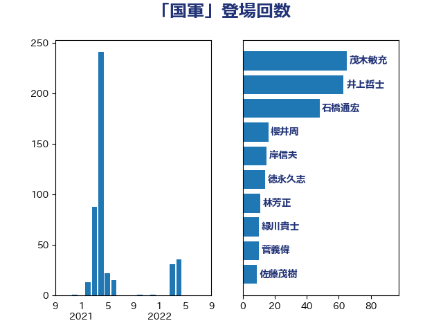

単語「国軍」

| 茂木敏充 | 自由民主党 | 65 回 |
| 井上哲士 | 日本共産党 | 63 回 |
| 石橋通宏 | 立憲民主党 | 48 回 |
| 櫻井周 | 立憲民主党 | 16 回 |
| 岸信夫 | 自由民主党 | 15 回 |
| 徳永久志 | 立憲民主党 | 14 回 |
| 林芳正 | 自由民主党 | 11 回 |
| 緑川貴士 | 立憲民主党 | 10 回 |
| 菅義偉 | 自由民主党 | 10 回 |
| 佐藤茂樹 | 公明党 | 9 回 |
| 穀田恵二 | 日本共産党 | 7 回 |
| 小熊慎司 | 立憲民主党 | 6 回 |
| 小西洋之 | 立憲民主党 | 6 回 |
| 浅田均 | 日本維新の会 | 5 回 |
| 渡辺周 | 立憲民主党 | 4 回 |
| 羽田次郎 | 立憲民主党 | 4 回 |
| 逢沢一郎 | 自由民主党 | 4 回 |
| 鷲尾英一郎 | 自由民主党 | 4 回 |
| 佐藤正久 | 自由民主党 | 3 回 |
| 國場幸之助 | 自由民主党 | 3 回 |
| 岡田克也 | 立憲民主党 | 3 回 |
| 玄葉光一郎 | 立憲民主党 | 3 回 |
| 鈴木貴子 | 自由民主党 | 2 回 |
| 中西祐介 | 自由民主党 | 1 回 |
| 北神圭朗 | 無所属 | 1 回 |
| 太栄志 | 立憲民主党 | 1 回 |
| 小田原潔 | 自由民主党 | 1 回 |
| 岸田文雄 | 自由民主党 | 1 回 |
| 梅谷守 | 立憲民主党 | 1 回 |
| 浦野靖人 | 日本維新の会 | 1 回 |
| 清水貴之 | 日本維新の会 | 1 回 |
| 片山さつき | 自由民主党 | 1 回 |
| 西岡秀子 | 国民民主党 | 1 回 |
| 赤羽一嘉 | 公明党 | 1 回 |
| 鈴木庸介 | 立憲民主党 | 1 回 |
| 鈴木憲和 | 自由民主党 | 1 回 |
| 鬼木誠 | 立憲民主党 | 1 回 |
| 麻生太郎 | 自由民主党 | 1 回 |